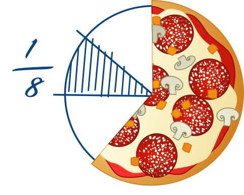

<div class="book-content">
  <h4 class="icon teacher">Und anders herum ...?</h4>
  <p>Wir können auch anders herum aus einer gemischten Zahl wieder einen \txta{unechten Bruch} machen:</p>
  
</div>
<span class="page-number">8</span>
